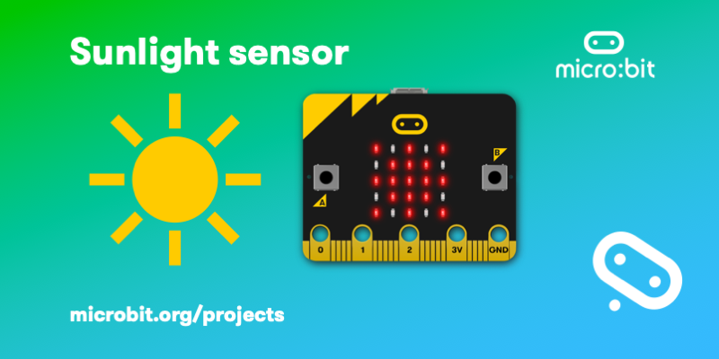

Sunlight Sensors
Contents
Sunlight Sensors¶
How it works¶
As well as working as an output, the LEDs on your micro:bit can also work as an input device light sensor, measuring the amount of light falling on them.
Flash this program onto your micro:bit and shine a light source, like a torch, daylight or bright ceiling light on to the micro:bit, and you should see the sun appear
what you need¶
micro:bit
python editor
a light source and something to cover the micro:bit with – your hand will do!
Video¶
from IPython.display import YouTubeVideo
YouTubeVideo('ii0U_FMr-Z4', width=800, height=300)
Image of sunlight sensor¶
![alternative text]
Codes¶
from microbit import *
while True:
if display.read_light_level() > 100:
display.show(Image(
"90909:"
"09990:"
"99999:"
"09990:"
"90909"))
else:
display.clear()
---------------------------------------------------------------------------
ModuleNotFoundError Traceback (most recent call last)
Input In [2], in <module>
----> 1 from microbit import *
3 while True:
4 if display.read_light_level() > 100:
ModuleNotFoundError: No module named 'microbit'
from IPython import display
display.HTML('<iframe src="https://jackbonk.github.io/editor/" allow="usb;serial" width=800 height=500></iframe>')
C:\Users\rimsha\AppData\Local\Programs\Python\Python310\lib\site-packages\IPython\core\display.py:414: UserWarning: Consider using IPython.display.IFrame instead
warnings.warn("Consider using IPython.display.IFrame instead")